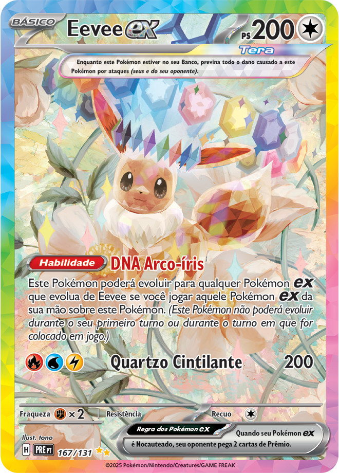
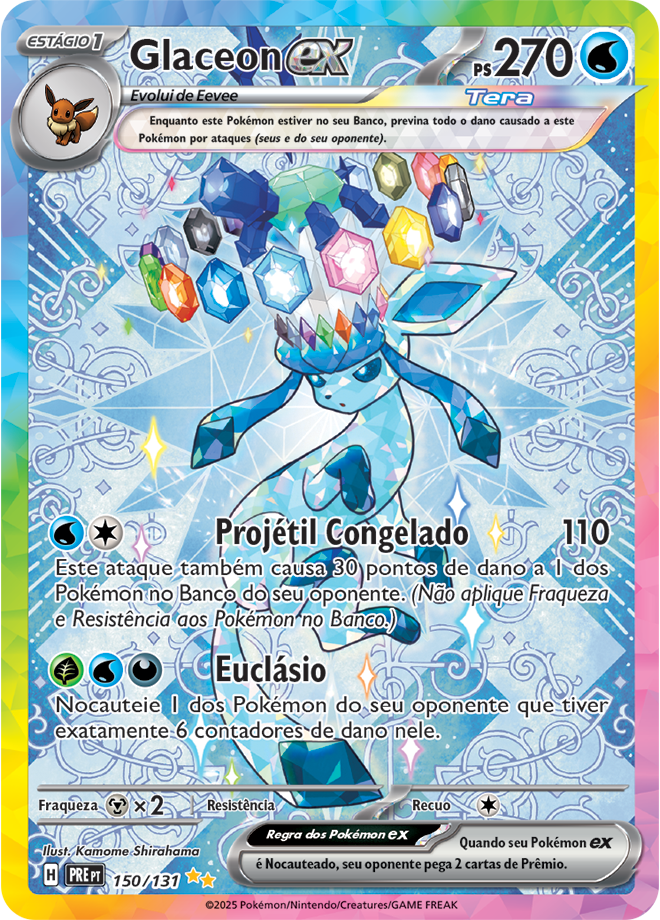
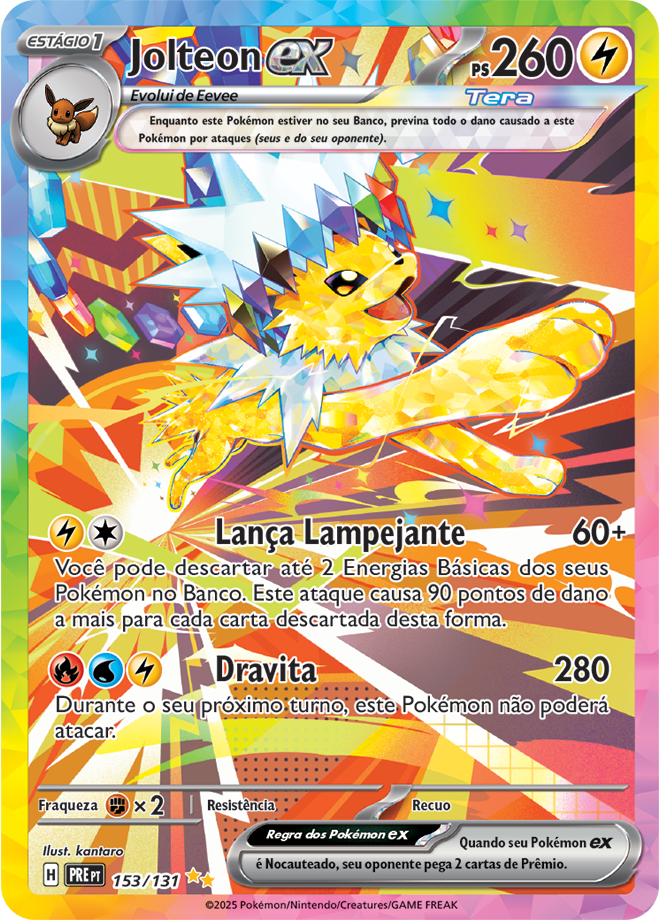
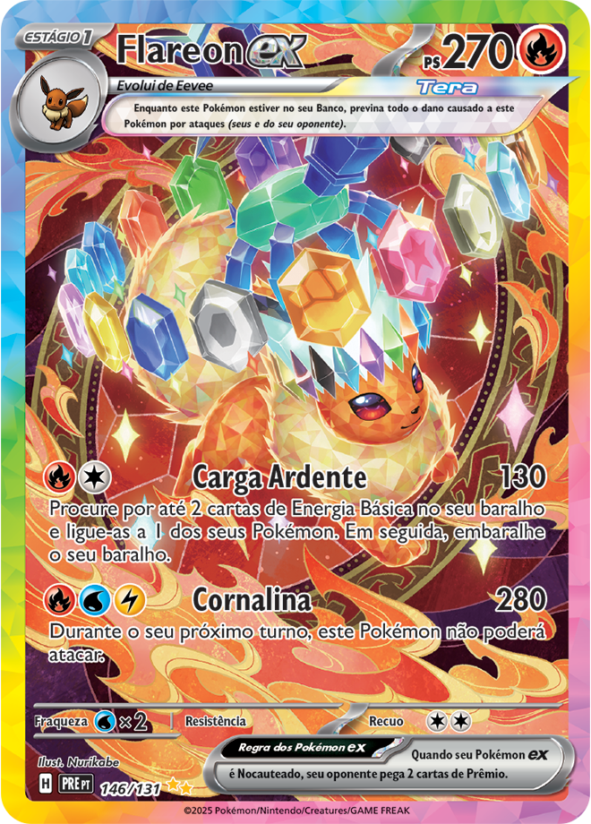
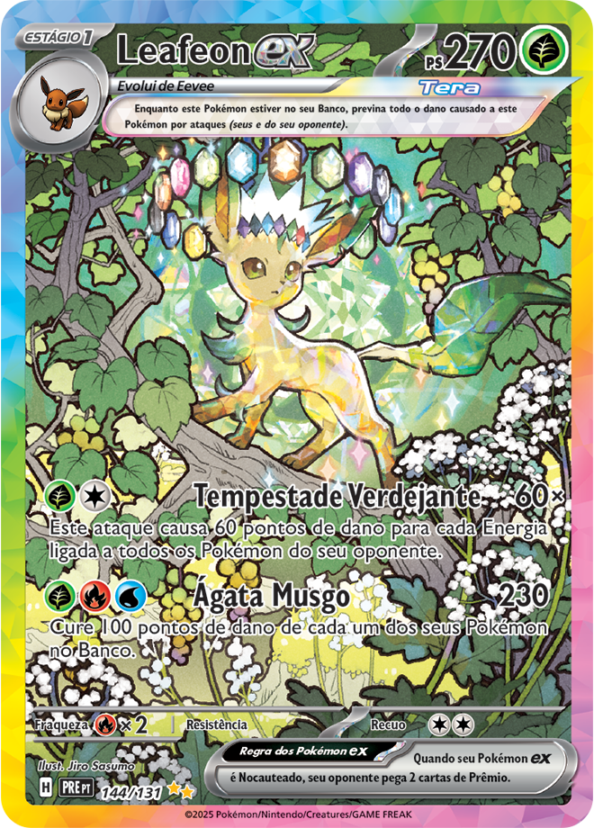
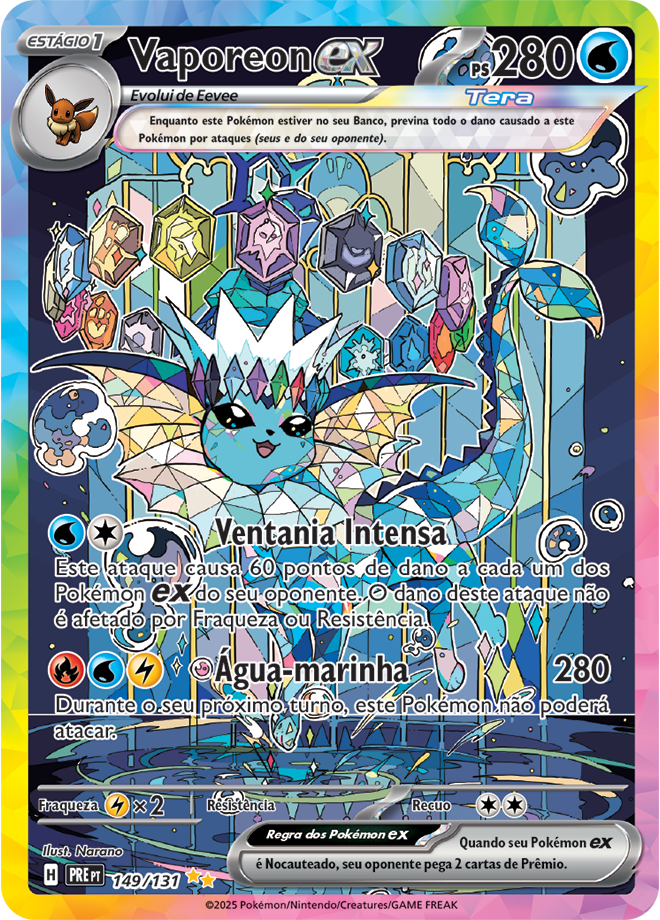
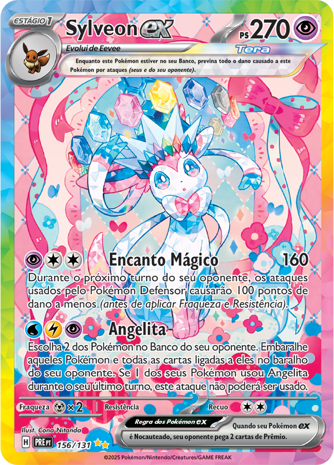
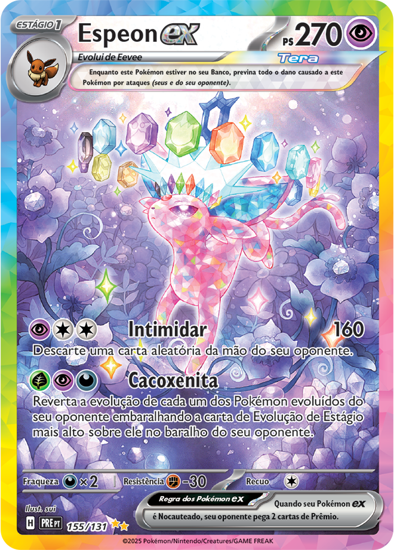
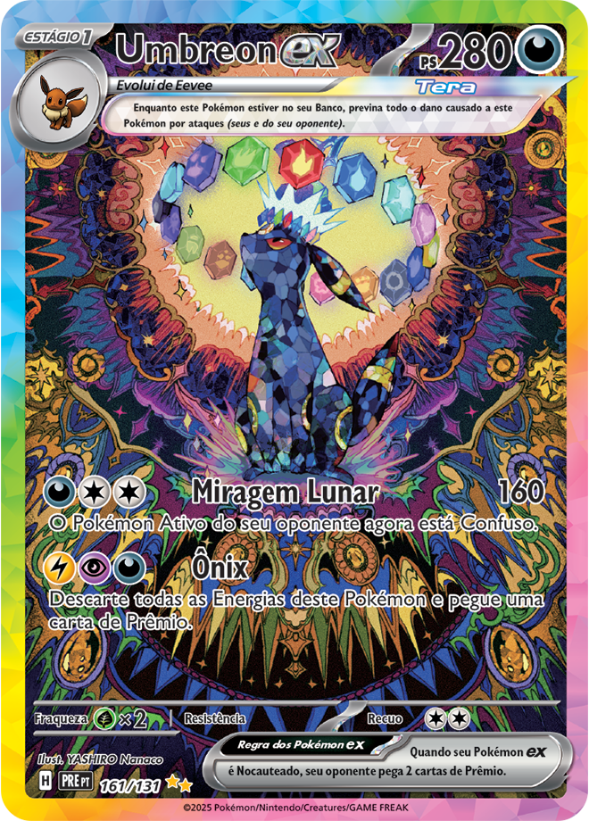

A carta Eevee ex em versão Full Art se destaca pelo visual detalhado e expressivo, sendo uma das mais queridas entre colecionadores por representar o início das Eeveelutions. Apesar de não ser a mais rara do conjunto, ainda possui um bom valor no mercado por sua popularidade, geralmente considerada uma carta de raridade média dentro da coleção.

A carta Glaceon ex Full Art se destaca por sua estética elegante e tons frios. É considerada uma carta de boa raridade dentro do set, e costuma ter um valor interessante entre colecionadores, especialmente por sua aparência refinada.

A carta Jolteon ex Full Art traz uma arte dinâmica que transmite velocidade e energia. É bastante procurada por fãs do tipo elétrico e das Eeveelutions. Sua raridade costuma ser intermediária a alta dentro do set, e seu valor pode variar dependendo do estado da carta, sendo valorizada principalmente por colecionadores.

Flareon ex possui uma carta Full Art com cores vibrantes e chamativas, destacando seu poder ofensivo. Embora não seja sempre a mais valorizada entre as evoluções, ainda assim tem uma boa demanda no mercado. Sua raridade é moderada, com valor variável conforme conservação e edição..

Leafeon ex em versão Full Art traz uma arte suave e natural, com bastante apelo visual. Sua raridade costuma ser intermediária, e seu valor varia de acordo com a procura. É uma carta valorizada principalmente por quem gosta de designs mais tranquilos e naturais.

A carta Vaporeon ex Full Art apresenta uma arte fluida e muito bonita, sendo bastante apreciada por colecionadores. Normalmente possui uma raridade média dentro do conjunto, mas pode alcançar valores interessantes devido à popularidade do Pokémon e à estética da carta.

A carta Sylveon ex Full Art se destaca pelo visual delicado e cores suaves, sendo uma das mais populares entre fãs. Conhecida por representar o tipo Fada, sua arte transmite leveza, charme e poder ao mesmo tempo. Dentro da coleção, costuma ter uma raridade intermediária a alta, e seu valor pode ser relativamente elevado, principalmente pela grande popularidade do Pokémon e pelo apelo estético da carta entre colecionadores.

A carta Espeon ex Full Art apresenta um visual elegante e brilhante, com grande apelo entre fãs. Sua raridade é intermediária a alta, e seu valor pode ser considerável, especialmente em boas condições, sendo uma carta bastante desejada.

Umbreon ex geralmente é uma das cartas mais desejadas entre as Eeveelutions, e sua versão Full Art não é diferente. Com uma arte mais sombria e marcante, costuma ter alta raridade e valor elevado no mercado, sendo muito procurada por colecionadores.